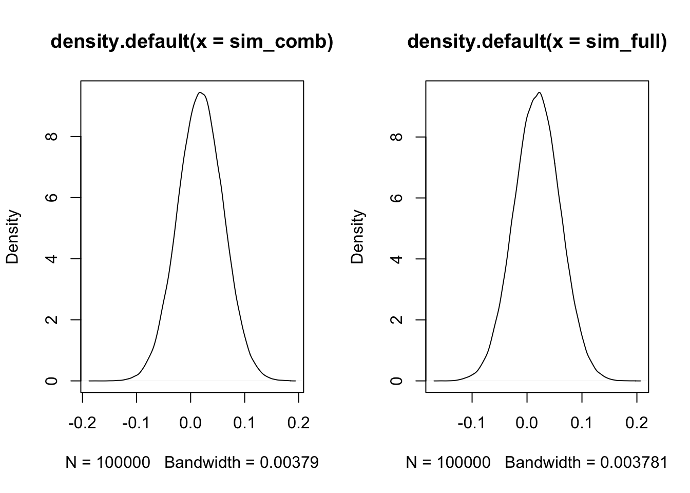

Chapter 7
7.1 Posterior for \(\mu_j\)
If we consider the posterior distribution of \(\mu_j\): \[\mu_j | \mu, y, \tau, k_1 \sim N(\frac{\mu/k_1 + \bar y_j n_j}{n_j + 1/k_1}, ((n_j + \frac{1}{k_1}) \tau )^{-1})\]
and also consider that, if we have a random variable \(X \sim (\mu_{X}, \sigma^{2}_{X})\) and \(Y \sim (\mu_{Y}, \sigma^{2}_{X})\), their sum Z = Y + X will be distributed as a \(N(\mu_{X} + \mu_{Y}, \sigma^{2}_{X})\). We can then write the posterior distribution of \(\mu_j\) as
\[\mu_j | \mu, y, \tau, k_1 \sim N(\frac{\mu/k_1}{n_j + 1/k_1}, ((n_j + \frac{1}{k_1}) 2\tau )^{-1}) + N(\frac{\bar y_j n_j}{n_j + 1/k_1}, ((n_j + \frac{1}{k_1}) 2\tau )^{-1})\]
leading to
\[\mu_j | y, \tau, k_1 \sim N(\frac{\bar y_j n_j}{n_j + 1/k_1}, ((n_j + \frac{1}{k_1}) 2\tau )^{-1})\]
7.2 Example code
library(tidyverse)## ── Attaching packages ─────────────────────────────────────── tidyverse 1.3.1 ──## ✓ ggplot2 3.3.5 ✓ purrr 0.3.4
## ✓ tibble 3.1.2 ✓ dplyr 1.0.7
## ✓ tidyr 1.1.3 ✓ stringr 1.4.0
## ✓ readr 1.4.0 ✓ forcats 0.5.1## ── Conflicts ────────────────────────────────────────── tidyverse_conflicts() ──
## x dplyr::filter() masks stats::filter()
## x dplyr::lag() masks stats::lag()set.seed(2021)
m = 5; n = 1000
alpha = 0.5; beta = 1; mu_mu = 0; k2 = 10; k1 = 8
alloc <- sample(1:m, size = n, replace = TRUE)
tau <- rgamma(1, 1/alpha, beta) # 1.29
mu <- rnorm(1, mu_mu, sqrt(k2/tau))
muj_1 <- rnorm(m, mu, sqrt(k1/tau))
y <- vector()
for(i in 1:n) {
y[i] <- rnorm(1, muj_1[alloc[i]], sd = sqrt(1/tau))
}
df <- data.frame(alloc, y)
mus_j <- df %>%
group_by(alloc) %>%
summarise(m = mean(y),
n = n())
mu_mu_j <- (mu/k1 + (mus_j$m * mus_j$n))/(mus_j$n + (1/k1))
sd_mu_j <- 1/(tau * (mus_j$n + (1/k1)))
mu_x_mu_j <- (mu/k1)/(mus_j$n + (1/k1))
sd_x_mu_j <- 1/(2*tau * (mus_j$n + (1/k1)))
mu_y_mu_j <- ((mus_j$m * mus_j$n))/(mus_j$n + (1/k1))
sd_y_mu_j <- 1/(2*tau * (mus_j$n + (1/k1)))
sim_comb <- rnorm(100000, mu_x_mu_j[1], sd = sqrt(sd_x_mu_j[1])) +
rnorm(100000, mu_y_mu_j[1], sd = sqrt(sd_y_mu_j[1]))
sim_full <- rnorm(100000, mu_mu_j[1], sd = sqrt(sd_mu_j[1]))
# Means
mean(sim_comb); mean(sim_full)## [1] 0.01839344## [1] 0.01845362# SDs
sd(sim_comb); sd(sim_full)## [1] 0.04211173## [1] 0.04200563par(mfrow = c(1, 2))
plot(density(sim_comb))
plot(density(sim_full))